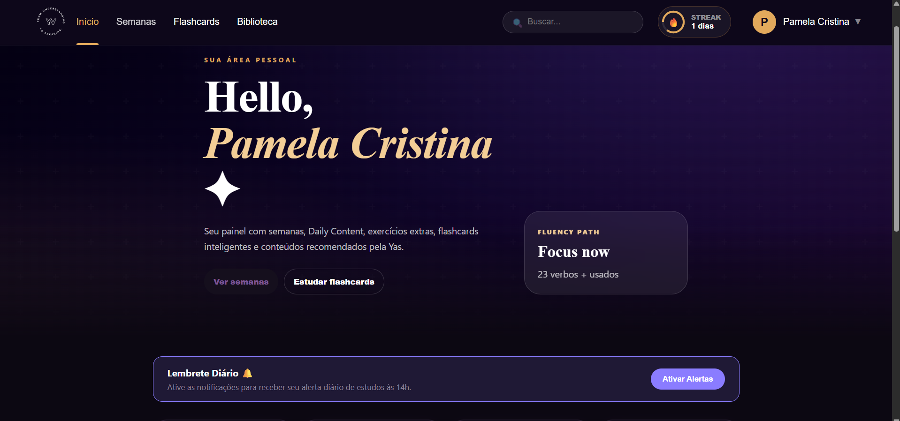
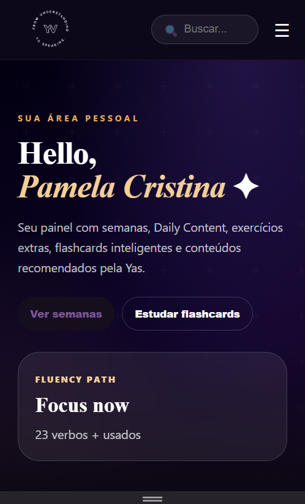
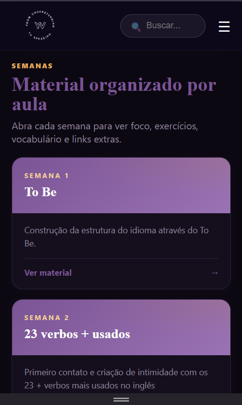
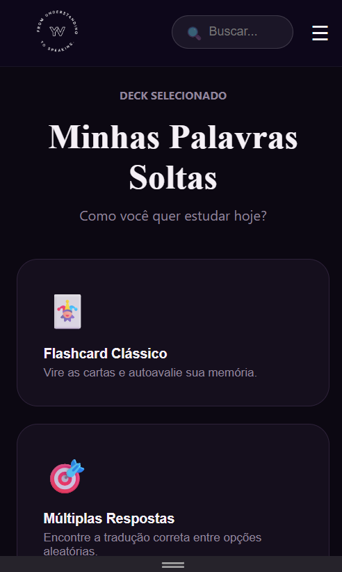

Aprenda o tema
Explicação clara, estrutura, contexto e comparação com aquilo que já faz sentido para você.
YV English · Language Academy & Method
Inglês sob medida com acompanhamento real. Chega de tentar estudar sozinho.
Na YV, você não recebe apenas aulas. Você recebe um caminho com estrutura, prática, correção e revisão para evoluir com mais clareza e menos frustrações evitáveis.


Estudo inglês há mais de dez anos, falo inglês e espanhol e atualmente estou aprendendo italiano.
Como apaixonada por idiomas, já passei por várias fases desse processo: empolgação, frustração, bloqueios, insegurança e progresso. Por isso, não vendo facilidade artificial.
Mesmo com bons materiais e um bom professor, aprender um idioma novo continua sendo um desafio. O que a YV oferece é acompanhamento: um processo próximo, estratégico e humano para você não precisar enfrentar tudo sozinho.
Um caminho simples, mas consistente: entender, aplicar, ajustar e revisar.
Explicação clara, estrutura, contexto e comparação com aquilo que já faz sentido para você.
Exercícios, fala e escrita entram no processo para transformar entendimento em uso real.
Correções, feedback e direcionamento personalizado para fortalecer pontos fracos e continuar evoluindo com confiança.
Revisão ativa e repetição espaçada para sustentar o que foi aprendido e evitar esquecer rápido.
Você aprende por que a frase funciona, sem depender de tradução palavra por palavra.
O conteúdo é revisado de forma simples e ativa para fortalecer entendimento real e autonomia.
O aprendizado volta em momentos certos para combater a curva do esquecimento.
Séries, trabalho, viagens e interesses entram nas aulas para transformar inglês em uso real.
Semanas, exercícios, notas, conteúdos extras e revisões reunidos em um ambiente pensado para acompanhar sua evolução.

Flashcards com repetição espaçada para ajudar você a lembrar do que aprende.

Um jornal digital criado pela YV com leitura, áudio, vocabulário e interpretação para manter seu contato com o inglês vivo e contextualizado.
Conhecer o The Fluency Times →Cada etapa concluída merece reconhecimento. Ao finalizar um módulo, você recebe um certificado de conclusão emitido pela YV English.
Profissionalmente, academicamente e pessoalmente. Um novo idioma amplia possibilidades, autonomia e confiança para ocupar novos espaços.
⚠️ Aviso: Devido ao modelo de acompanhamento personalizado, as vagas para novos alunos este mês são limitadas.
R$ 220/mês
1 encontro semanal
R$ 420/mês
2 encontros semanais
R$ 620/mês
3 encontros semanais
Agende um encontro gratuito e descubra qual caminho faz mais sentido para os seus objetivos, rotina e momento de aprendizagem.